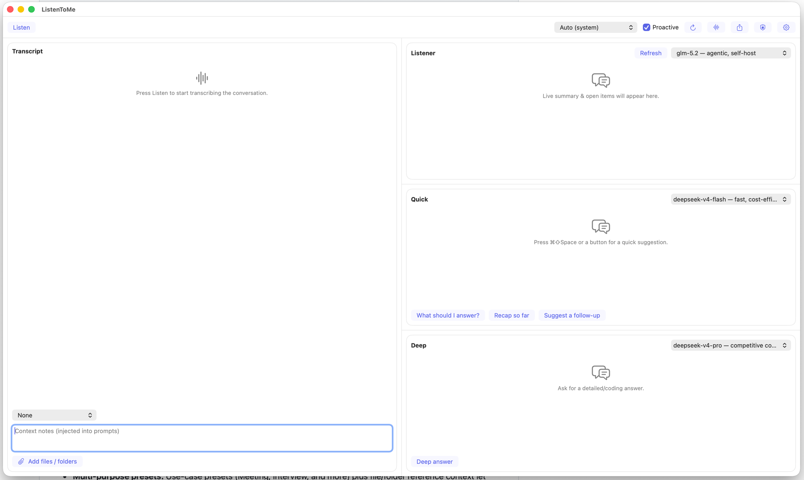

模块 2 · 学习 · 7 个单元 · 26 个部分
端侧 AI 应用：架构
纯文本版——此处不发布讲解音频；下面的文字就是完整的审定讲解。
第 1 单元 · 共 7 单元
导论
2 个部分
承诺： 追踪一条真实的端侧流水线，然后重建它的核心。 时长： 约 75 分钟讲授 + 约 3 小时实验。
SourceListenToMe/Sources/ListenToMeCore/MeetingSession.swift
欢迎来到第 2 模块：端侧 AI 应用的架构。 今天，抽象到此为止。 我们打开 ListenToMe，一个已经发布的 macOS 会议助手，逐个阶段阅读它实际运行的流水线。 然后在实验中，你用 Python 把这个核心重建为 TinyCopilot，直到它的整套测试全部通过。 本模块包括约七十五分钟的讲授，外加三小时的实验。 学完之后，你能为每个阶段指出对应的 Swift 文件，并为每一个决策给出理由。
来源与讲者备注
欢迎来到第 2 模块。今天抽象到此为止：我们打开 ListenToMe——一个已经发布的 macOS 会议助手——阅读它实际运行的流水线。然后在实验中，你用 Python 把这个核心重建为 TinyCopilot，直到 208 个测试全部通过。学完本模块，你能为每个阶段指出对应的 Swift 文件，并为每一个决策给出理由。（45 秒；转到学习目标。）
学完本模块，你能够……
- 画出 采集 → 转写 → 上下文 → 提示词 → 路由。
- 说出实现每个阶段的文件。
- 为三个协议接缝给出理由。
- 按角色路由模型，取消过期的流。
- 把提示词构建器写成纯函数。
- 为流式错误定义类型，让截断大声失败。
这六条要点就是本模块的全部约定。 你将画出这条流水线：从采集，到转写、上下文、提示词，再到路由。 你将说出实现每个阶段的文件，并为三个协议接缝给出理由。 你将按角色路由模型、取消过期的流、把提示词构建器写成纯函数，并为流式错误定义类型，让截断大声失败。 注意这里没有什么：没有提示词工程技巧，也没有模型基准测试。 本模块讲的是架构，也就是决策放在哪里、又如何被证明，每个目标都对应一个实验步骤和至少一道测验题。
来源与讲者备注
这六条要点就是本模块的全部约定。注意这里没有什么：没有提到提示词工程技巧，也没有模型基准测试。本模块讲的是架构——决策放在哪里、又如何被证明。每个目标都对应一个实验步骤和至少一道测验题。如果你能做到这六件事，今天就能通过实验 M2。（60 秒；然后进入 M2.1。）
第 1 节 · 共 3 节
M2.1 一条流水线，两层结构
7 个部分
- 麦克风 → AudioCapturingPCM 数据块
- 系统音频 → AudioCapturingPCM 数据块
- AudioCapturing → Transcribing采集
- Transcribing → 存储转写
- 存储 → 上下文
- 上下文 → 提示词
- 提示词 → 路由
- 路由 → LLMProvider按角色
- LLMProvider → Listener · Quick · Deep 面板流式回答
SourceListenToMe/Sources/ListenToMeCore/MeetingSession.swift · ListenToMe/Sources/ListenToMeCore/Capture.swift:4 · ListenToMe/Sources/ListenToMeCore/Transcriber.swift:4 · ListenToMe/Sources/ListenToMeCore/LLMProvider.swift:13
整个系统，一行就能说完。 麦克风音频标记为 you，系统音频标记为 others，两者都以 PCM 数据块的形式到达。 接着流水线依次运行采集、转写、存储、上下文、提示词和路由。 关键在于这条分界：App 文件夹里的一切都接触硬件，而 ListenToMeCore 里的一切都是纯的。 三个接缝分别是 AudioCapturing、Transcribing 和 LLMProvider。 正是这种分层，让整条流水线可以在单元测试中针对模拟对象完整运行。
来源与讲者备注
- 页面上
ListenToMe/Sources/ListenToMeCore/MeetingSession.swift在 a9bde8e 打开 - 页面上
ListenToMe/Sources/ListenToMeCore/Capture.swift:4在 a9bde8e 打开 - 页面上
ListenToMe/Sources/ListenToMeCore/Transcriber.swift:4在 a9bde8e 打开 - 页面上
ListenToMe/Sources/ListenToMeCore/LLMProvider.swift:13在 a9bde8e 打开
先从左到右读一遍，然后把这条分界大声说出来：`App/` 里的一切都接触硬件；`Sources/ListenToMeCore` 里的一切都是纯的。三个接缝是 `AudioCapturing`、`Transcribing` 和 `LLMProvider`。这之所以重要，是因为可测试性：整条流水线可以在单元测试中针对模拟对象完整运行。记住这张图；接下来我们逐层走一遍。（75 秒；下一张讲采集。）
采集层有意做薄
/// Captures the local microphone (source `.you`) and system audio (source `.others`),/// converting both to mono Float PCM and emitting `AudioChunk`s.final class DualChannelCapture: NSObject, AudioCapturing, @unchecked Sendable {- 说话人归属零成本——无需说话人分离模型。
- 最难测试的代码，所以做得最薄。
采集层有意做得很薄。 DualChannelCapture 接入两个来源，也就是麦克风和系统音频，把两者都转换成单声道 Float PCM，并以音频块的形式发出。 麦克风的 tap 把它的缓冲区标记为 you，ScreenCaptureKit 的回调把它的缓冲区标记为 others。 正是这一个标记，让应用无需任何说话人分离模型，就能区分 You 和 Others。 采集受硬件约束，所以它是系统中最难测试的代码，这也正是它被尽量做薄的原因。
来源与讲者备注
- 展示代码
ListenToMe/App/DualChannelCapture.swift:8-10在 a9bde8e 打开 - 备注中
ListenToMe/App/DualChannelCapture.swift:8-9在 a9bde8e 打开 - 备注中
ListenToMe/App/DualChannelCapture.swift:143在 a9bde8e 打开 - 备注中
ListenToMe/App/DualChannelCapture.swift:324在 a9bde8e 打开
`ListenToMe/App/DualChannelCapture.swift:8-9` 处的头部注释说明，两个来源都被转换成单声道 Float PCM，并以音频块的形式发出。麦克风的 tap 在 `ListenToMe/App/DualChannelCapture.swift:143` 把缓冲区标记为 `.you`；ScreenCaptureKit 的回调在 `ListenToMe/App/DualChannelCapture.swift:324` 把缓冲区标记为 `.others`。正是这一个标记，让应用不需要任何说话人分离就能标注 "You" 和 "Others"。采集受硬件约束，所以要尽可能做小——这条规则我们会在实验中再次用到。（70 秒；转到接缝。）
三个协议接缝
| 接缝 | 核心声明 | 应用提供 |
|---|---|---|
AudioCapturing | 到达什么音频 | AVAudioEngine、ScreenCaptureKit |
Transcribing | 临时结果与最终结果 | SpeechAnalyzer、WhisperKit |
LLMProvider | 流式文本 | Ollama 客户端（在 Core 中）、Apple Intelligence |
public protocol AudioCapturing: Sendable { var statusUpdates: AsyncStream<CaptureStatus> { get } var chunks: AsyncStream<AudioChunk> { get } func start() async throws func stop()}接缝是由纯核心拥有、由平台侧实现的协议，核心声明了三个这样的协议。 表格列出了全部三个；代码展示的是第一个。 AudioCapturing 暴露一个状态流、一个数据块流，以及 start 和 stop，应用用 AVAudioEngine 和 ScreenCaptureKit 来实现它。 Transcribing 表示会有临时结果和最终结果到达，由 SpeechAnalyzer 或 WhisperKit 实现。 LLMProvider 是最小的一个：一个 id、一个提示词大小上限，以及两个流式函数，一个用于回答，另一个还会带上模型的推理过程。 有两个提供方实现了它：核心里的 Ollama 客户端，以及平台侧的 Apple Intelligence 提供方。 核心从不提及 AVFoundation 或 Ollama，只提及这些协议，正是这种反转让测试套件能够注入模拟对象。 明天再加第四个转写引擎，Transcribing 协议之下的任何东西都不用改。
来源与讲者备注
- 展示代码
ListenToMe/Sources/ListenToMeCore/Capture.swift:4-9在 a9bde8e 打开 - 页面上
ListenToMe/Sources/ListenToMeCore/LLMProvider.swift:13-22在 a9bde8e 打开
接缝是由纯核心拥有、由平台侧实现的协议。Core 从不提及 AVFoundation 或 Ollama；它只提及这三个协议。正是这种反转让测试套件能够注入模拟对象。回报是：如果明天我们加第四个转写引擎，`Transcribing` 协议之下的任何东西都不用改——存储不用改，提示词不用改，路由器也不用改。（75 秒；接下来看转写接缝内部。）
三个引擎，一个接缝
| 引擎 | 状态 | 取舍 |
|---|---|---|
| SpeechAnalyzer | 默认 | 每个来源一个分析器 |
| SpeechRecognizer | 旧版 | 进程级全局限制 |
| WhisperKit | 需主动开启 | 批处理，只输出已定稿片段 |
- Apple Speech 只选一种语言；不支持语码转换。
- 加一个引擎；下游什么都不用改。
一个接缝，三个引擎。 SpeechAnalyzer 是默认引擎，每个来源需要一个分析器，不像旧版的语音识别器那样受进程级全局限制。 WhisperKit 需要主动开启，按批处理工作，所以只输出已定稿的片段。 注意 prepare 的约定：在音频到达之前完成预热，这样 feed 永远不会阻塞，会议开头的几秒也不会丢失。 WhisperKit 用实时的临时结果换取更强的多语言质量，因为 Apple 的端侧 Speech 只选一种主要语言，不支持语码转换。 加一个引擎，下游什么都不用改。
来源与讲者备注
- 页面上
ListenToMe/Sources/ListenToMeCore/Transcriber.swift在 a9bde8e 打开 - 备注中
ListenToMe/App/SpeechAnalyzerTranscriber.swift:6-39在 a9bde8e 打开 - 备注中
ListenToMe/App/MeetingView.swift:106-107在 a9bde8e 打开
`Sources/ListenToMeCore/Transcriber.swift` 定义了 `prepare()`、`feed(_:)`、`finish()`。`prepare()` 的约定很重要：在音频到来之前完成预热，这样 `feed` 永远不会阻塞，会议开头的几秒也不会丢失。`App/SpeechAnalyzerTranscriber.swift:6-39` 注明每个来源一个分析器，这一点与 `SFSpeechRecognizer` 不同。WhisperKit 用实时的临时结果换取更强的多语言质量——原因见 `ListenToMe/App/MeetingView.swift:106-107`：Apple 的端侧 Speech 只选一种主要语言。（80 秒；接下来讲存储。）
存储及其预算
ConversationStore.swift是唯一的事实来源。- 最终结果日志，外加每个来源一条临时结果。
recentContext(maxChars:)从最新的开始往回走。- 总是保留最新的一条，即使超出预算。
- 回顾和行动项的预算是 100,000。
public func buildContext(from store: ConversationStore, notes: String?, maxChars: Int = 4000, summary: String? = nil, responseLanguage: String? = nil, references: String? = nil, personaGuidance: String? = nil) -> PromptContextConversationStore 是唯一的事实来源。 它保存一份最终结果日志，外加每个说话来源当前的一条临时结果；应用一个结果时，要么追加一条最终结果，要么替换该来源的临时结果。 上下文窗口从最新的语句开始往回走，放得下就保留，并且总是保留最新的那一条，即使它单独就超出预算，所以窗口永远不会为空。 这张幻灯片上的代码是 ContextEngine 中真实的函数签名：buildContext 接收存储、可选的笔记，以及默认值为 4,000 个字符的 maxChars 预算。 回顾和行动项提示词的预算是 100,000，因为它们必须覆盖整场对话。 注意，预算是调用接口上带默认值的参数，而不是埋在函数体里的常量：测试能看到它，实验也能调整它。
来源与讲者备注
- 页面上
ListenToMe/Sources/ListenToMeCore/ConversationStore.swift在 a9bde8e 打开 - 展示代码
ListenToMe/Sources/ListenToMeCore/ContextEngine.swift:12-14在 a9bde8e 打开 - 备注中
ListenToMe/Sources/ListenToMeCore/ConversationStore.swift:76-87在 a9bde8e 打开 - 备注中
ListenToMe/Sources/ListenToMeCore/ContextEngine.swift:12在 a9bde8e 打开 - 备注中
ListenToMe/Sources/ListenToMeCore/MeetingSession.swift:582-587在 a9bde8e 打开
`apply(_:)` 追加最终结果，替换临时结果。窗口函数从最新的语句开始往回走，放得下就保留，并且总是包含最近的那一条，即使它单独就超出预算——窗口永远不会为空（`ListenToMe/Sources/ListenToMeCore/ConversationStore.swift:76-87`）。默认值是 4,000 个字符（`ContextEngine.swift:12`），但 `MeetingSession.transcriptBudget(for:)` 把回顾和行动项提示词提高到 100,000，因为它们必须覆盖整场对话（`ListenToMe/Sources/ListenToMeCore/MeetingSession.swift:582-587`）。（85 秒；简单讲一下分段。）
当引擎不提供临时结果时
- 核心 VAD 只有 37 行；默认值 0.02、0.8 秒。
if value >= speechThreshold { inSpeech = true lastSpeechTime = time return false}if inSpeech && (time - lastSpeechTime) >= silenceDuration { inSpeech = false return true}WhisperKit 会缓冲音频，所以必须有某个东西来决定一句话在哪里结束。 核心里的语音活动检测器只有三十七行。 它逐帧计算均方根能量，阈值为 0.02，尾部静音窗口为 0.8 秒。 它只返回一次 true，就在语音之后的静音首次超过这个时长的那一帧上，所以每个语句边界只触发一次。 这里没有机器学习模型，只有一个阈值和一个计时器。 在用模型会大材小用的地方，就用廉价的启发式规则。
来源与讲者备注
- 展示代码
ListenToMe/Sources/ListenToMeCore/VAD.swift:26-34在 a9bde8e 打开 - 备注中
ListenToMe/Sources/ListenToMeCore/VAD.swift在 a9bde8e 打开 - 备注中
ListenToMe/Tests/ListenToMeCoreTests/VADTests.swift在 a9bde8e 打开
WhisperKit 会缓冲音频，所以必须有某个东西来决定一句话在哪里结束。`Sources/ListenToMeCore/VAD.swift` 逐帧计算均方根能量，并且只返回一次 true：就在语音之后的尾部静音首次超过静音时长的那一帧上。由 `Tests/ListenToMeCoreTests/VADTests.swift` 验证。这是本模块反复出现的做法：在用模型会大材小用的地方，就用廉价的启发式规则。（70 秒；该上证明幻灯片了。）
证据
最新的片段总能留下
- 保证：上下文永不为空。
- 回报：核心覆盖率 96%，底线 95%。
for segment in utterances.reversed() { let cost = TranscriptSegment.promptCharacterCost(segment) // Always include the most recent; otherwise stop before … if !collected.isEmpty && total + cost > maxChars { break } total += cost collected.append(segment)}这是第一张证明幻灯片，它为整门课程立下一个模式：我们的每一个论断都有一个你能打开的文件指针，而且这个指针能解析。 这个循环很短。 它从最新的语句开始往回走，给每条语句计入它的提示词成本，并在超出预算之前跳出，但前提是已经收集到了至少一条。 全部的保证就在这里，它就在那个守卫条件里：最新的片段总会被包含，即使它单独就撑爆了预算，所以上下文窗口永远不会为空。 4,000 个字符的默认预算定义在 ContextEngine 中。 去读这个循环，而不是轻信这些要点，源码里的注释准确说明了要验证什么。 百分之九十六的核心覆盖率徽章和百分之九十五的底线，都是这种分层带来的下游结果。
来源与讲者备注
- 展示代码
ListenToMe/Sources/ListenToMeCore/ConversationStore.swift:79-85在 a9bde8e 打开 - 备注中
ListenToMe/scripts/check-coverage.sh在 a9bde8e 打开
这是第一张证明幻灯片。打开文件，把循环大声读出来，而不是轻信这些要点。在本课程中，证明幻灯片的意义在于：每一个论断都有一个你能打开的文件指针，而且这个指针能解析。96% 的覆盖率徽章，以及 `scripts/check-coverage.sh` 中 95% 的底线，都是这种分层带来的下游结果。（70 秒；过渡到路由。）
第 2 节 · 共 3 节
M2.2 三个角色，三个模型
7 个部分

- Transcript（转写）
- Listener：滚动摘要 · 要速度
- Quick：快捷键、主动触发 · 要速度
- Deep：长推理 · 要强度
- 每个面板都有自己的模型下拉菜单
SourceListenToMe/Sources/ListenToMeCore/CopilotRole.swift
M2.2 这一节讲路由，先从角色讲起。 Listener、Quick 和 Deep 是核心里的一个枚举，而不是界面上的偶然产物。 Listener 维护一份滚动摘要并持续刷新，所以速度胜过深度；Quick 通过全局快捷键作答，还会主动触发，所以延迟就是一切。 Deep 是按需的长推理，这里强度比速度更重要。 应用显示四个面板：Transcript、Listener、Quick 和 Deep，每个都有自己的模型下拉菜单。 「处处都用最好的模型」会失败两次：它在不需要的地方浪费延迟，还把产品绑死在某一个模型的怪癖上。
来源与讲者备注
角色是一个枚举——`Sources/ListenToMeCore/CopilotRole.swift` 中的 `listener`、`quick`、`deep`——而不是界面上的偶然产物。Quick 通过全局快捷键作答，还会主动触发，所以延迟就是一切。Deep 是按需的长推理。Listener 持续自动刷新，所以速度胜过深度。「处处都用最好的模型」会失败两次：它在不需要的地方浪费延迟，还把产品绑死在某一个模型的怪癖上。（75 秒；接下来讲默认值。）
本地优先的角色默认值
ModelRanking.roleDefaults(from:local:) 自动挑选。
| 角色 | 精选标记 | 否则 |
|---|---|---|
| Quick | flash, mini, nano, lite, small, fast | 最轻的 |
| Deep | pro, reason, think, coder, code, ultra, max, large | 最重的 |
| Listener | 第二个快速标记，不同于 Quick 的 | 剩下最轻的 |
:cloud被排除在自动选择之外。- 只有没有本地模型时才用云端。
ModelRanking 会自动为每个角色挑选默认模型。 Quick 得到一个带快速标记的模型，例如 flash、mini、nano、lite、small 或 fast，否则就选最轻的那个。 Deep 得到一个带强力标记的模型，例如 pro、reason、think、coder、code、ultra、max 或 large，否则就选最重的那个。 云端过滤是隐私默认值，而不是速度默认值：一个没有固定模型的面板，绝不能悄悄把转写文本发送到 Ollama Cloud。 只有在不存在任何本地模型时，才会选择云端模型。
来源与讲者备注
- 页面上
ListenToMe/Sources/ListenToMeCore/ModelRanking.swift:49-54在 a9bde8e 打开 - 备注中
ListenToMe/Sources/ListenToMeCore/ModelRanking.swift:91-111在 a9bde8e 打开 - 备注中
ListenToMe/App/MeetingView.swift:845在 a9bde8e 打开 - 备注中
ListenToMe/Sources/ListenToMeCore/ModelRanking.swift:80-95在 a9bde8e 打开 - 备注中
ListenToMe/Sources/ListenToMeCore/ModelRanking.swift:119-159在 a9bde8e 打开
逻辑在 `ListenToMe/Sources/ListenToMeCore/ModelRanking.swift:91-111`，由 `ListenToMe/App/MeetingView.swift:845` 调用。快速标记包括 flash、mini、nano、lite、small、fast；强力标记包括 pro、reason、think、coder、code、ultra、max、large。本地优先过滤（`ListenToMe/Sources/ListenToMeCore/ModelRanking.swift:80-95`）是隐私默认值，而不是速度默认值：一个没有固定模型的面板，绝不能悄悄把转写文本发送到 Ollama Cloud。"good for" 提示来自 `describe(_:)` 及其表格（`ListenToMe/Sources/ListenToMeCore/ModelRanking.swift:119-159`）。（80 秒；现在讲那个隐蔽的缺陷。）
词首前缀，而不是子串
"gemini-2.5-flash"包含"mini"。- 词首检查拒绝它；子串检查接受它。
- 一个错误的检查会把整个家族路由错。
static func tokens(_ model: String) -> [String] { model.lowercased().split(whereSeparator: { "-:./ ".contains($0) }) .map(String.init)}static func hasMarker(_ model: String, _ marker: String) -> Bool { tokens(model).contains { $0.hasPrefix(marker) }}这是一个影响范围很大的小检查。 路由器按常见的分隔符，也就是短横线、冒号、点、斜杠和空格，把模型名拆成若干个词，只允许标记在词首匹配。 看 gemini-2.5-flash：它包含字母 m-i-n-i，所以原始的子串检查会把它认作 mini，并把它排为快速模型。 词首前缀检查会拒绝这次命中，因为 mini 不是这个名字里的一个词；hasPrefix 针对的是每个词，从来不是原始字符串。 一个错误的检查就会把整个模型家族路由错，而且除非你写了近似反例测试，否则没有任何测试会失败。 TinyCopilot 正好带了这个测试：test_gemini_is_not_demoted_as_mini。 幻灯片上的两个函数都是纯函数，没有 I/O，这正是它们能被完整单元测试的原因。
来源与讲者备注
- 展示代码
ListenToMe/Sources/ListenToMeCore/ModelRanking.swift:7-18在 a9bde8e 打开 - 备注中
ListenToMe/Sources/ListenToMeCore/ModelRanking.swift:13-18在 a9bde8e 打开
`ModelRanking.swift:13-18` 把这一点写进了文档：词首前缀匹配而不是原始子串匹配，能拒绝跨词的误命中，比如 gemini 包含 mini。一个原始的 `contains("mini")` 会把每个 Gemini 模型都排为快速模型，你的 Quick 默认值会对整个模型家族悄悄出错——除非你写了近似反例测试，否则没有任何测试会失败。TinyCopilot 的 `test_gemini_is_not_demoted_as_mini` 正是这个测试。（70 秒；接下来讲取消。）
生成令牌终结过期的流
MeetingSession为每个角色保留一个生成计数器。setModel(_:_)取消进行中的工作，并把计数器加一。- 流式循环守护每一次写入。
- 回答中途切换：旧 token 直接作废。
- 没有它，昨天的模型会顶着今天的名字作答。
在回答中途切换模型会带来一个隐蔽的正确性缺陷，修复办法是一个生成计数器。 MeetingSession 为每个角色保留一个计数器。 当你调用 set model 时，它会取消进行中的工作，并把计数器加一。 流式循环随后在每次写入前都对照这个计数器进行检查，所以在回答中途切换时，旧的 token 会被直接丢弃。 没有它，旧模型的一个慢回答会在切换之后才完成，并显示在新模型的名下，用户会以为是新模型答错了。 取消是一项正确性功能，而不是一种优化。
来源与讲者备注
- 备注中
ListenToMe/Sources/ListenToMeCore/MeetingSession.swift:204-221在 a9bde8e 打开 - 备注中
ListenToMe/Sources/ListenToMeCore/MeetingSession.swift:803-880在 a9bde8e 打开
`ListenToMe/Sources/ListenToMeCore/MeetingSession.swift:204-221` 是 `setModel` 调用 `cancelResponse`、由后者把计数器加一的地方；`ListenToMe/Sources/ListenToMeCore/MeetingSession.swift:803-880` 是每个流领取一个生成编号、循环在每次写入前检查它的地方。它防止的失败隐蔽而又尴尬：旧模型的一个慢回答在切换之后才完成，并显示在新模型的名下。用户会以为是新模型答错了。取消是一项正确性功能，而不是一种优化。（75 秒；接下来讲提示词。）
PromptBuilder 是纯的
Prompt.swift— 一个公开枚举，静态函数。- 零 I/O，零状态，零时钟。
- 上下文进，
LLMRequest出。 - 相同输入，相同字符串，永远如此。
- 测试断言构建出的文本；不需要模型。
Prompt 是核心里一个由静态函数组成的公开枚举。 它不做任何输入输出，不持有状态，也不读取时钟。 上下文进去，LLMRequest 出来，相同的输入总是产生相同的字符串。 在这里，纯粹性不是风格偏好：测试直接对构建出的文本做断言，所以提示词回归能在几毫秒内被抓住，不需要网络调用，也不需要模型。 这是让三个角色上的九个响应动作保持诚实的唯一方法。 在 TinyCopilot 中，任何隐藏状态或随机性都会让确定性测试失败。
来源与讲者备注
- 页面上
ListenToMe/Sources/ListenToMeCore/Prompt.swift在 a9bde8e 打开 - 备注中
ListenToMe/Tests/ListenToMeCoreTests/PromptBuilderTests.swift在 a9bde8e 打开 - 备注中
course/03-content/m02-ondevice-app/tinycopilot/src/tinycopilot/prompts.py在 main 打开 - 备注中
course/03-content/m02-ondevice-app/tinycopilot/tests/test_prompts.py在 main 打开
在这里，纯粹性不是风格偏好。`Tests/ListenToMeCoreTests/PromptBuilderTests.swift` 直接检查构建出的字符串，所以提示词回归能在几毫秒内被抓住，不需要网络调用，也不需要模型。这是让三个角色上的九个响应动作保持诚实的唯一方法。当你编写 TinyCopilot 的 `prompts.py` 时，任何隐藏状态或随机性都会让 `test_prompts.py` 中的确定性测试失败。（70 秒；接下来是三个基础提示词。）
三个基础提示词，三份约定
| 基础提示词 | 它的约定 |
|---|---|
| Quick | 不要开场白，用 1–3 句话作答 |
| Listener | 绝不编造负责人、截止日期、共识、完成状态 |
| Deep | 深度优先于简洁；相关时给出代码 |
- 九个响应动作叠加在上面。
- 人设指令追加到每个角色。
每个角色都有自己的基础提示词和自己的约定。 Quick 不要开场白，必须用一到三句话作答。 Listener 绝不能编造负责人、截止日期、达成的共识或完成状态。 Deep 重深度而非简洁，不要凑字数。 Listener 约定之所以存在，是因为它的摘要会回流到 Quick 和 Deep 的提示词中，一个幻觉出来的负责人就会扩散到所有地方；所以要在源头把它挡住。 九个响应动作叠加在上面，人设指令会追加到每个角色上，所以像 Interview 这样的预设会以完全相同的方式塑造全部三个角色。
来源与讲者备注
- 页面上
ListenToMe/Sources/ListenToMeCore/Prompt.swift在 a9bde8e 打开 - 备注中
ListenToMe/Sources/ListenToMeCore/Prompt.swift:129-135在 a9bde8e 打开 - 备注中
ListenToMe/Sources/ListenToMeCore/Prompt.swift:137-145在 a9bde8e 打开 - 备注中
ListenToMe/Sources/ListenToMeCore/Prompt.swift:147-152在 a9bde8e 打开 - 备注中
ListenToMe/Sources/ListenToMeCore/Prompt.swift:245-260在 a9bde8e 打开
读一读 `Prompt.swift` 里的原句：Quick 在 `ListenToMe/Sources/ListenToMeCore/Prompt.swift:129-135`，Listener 在 `ListenToMe/Sources/ListenToMeCore/Prompt.swift:137-145`，Deep 在 `ListenToMe/Sources/ListenToMeCore/Prompt.swift:147-152`。Listener 约定之所以存在，是因为它的摘要会回流到 Quick 和 Deep 的提示词中——一个幻觉出来的负责人就会扩散到所有地方，所以要在源头把它挡住。`ListenToMe/Sources/ListenToMeCore/Prompt.swift:245-260` 处的 `systemWithDirectives` 把人设和语言追加到每个面板，所以像 Interview 这样的预设会以完全相同的方式塑造全部三个角色。（80 秒；证明幻灯片。）
证据
只有已完成的摘要才能为其他角色提供依据
ListenToMe/Sources/ListenToMeCore/Prompt.swift:137-145— 绝不编造约定。ListenToMe/Sources/ListenToMeCore/MeetingSession.swift:53, 81-84— 两个摘要字段。lastCompletedListenerSummary— 会被注入，安全。- 进行中的
listenerSummary— 只用于显示，从不注入。 - 半个答案比没有答案更糟。
打开 MeetingSession，数一数摘要属性：有两个，而不是一个。 实时值就是你在屏幕上看到的那个，刷新以流式进行时它会被清空。 完成值是单独的一个，只有它会被注入其他角色的提示词。 这里要破除的误解是：上下文总是越多越好，所以屏幕上有什么就注入什么。 一份进行中的摘要是看起来很自信的半个答案，而 Quick 会把它当作事实。 半个答案比没有答案更糟。
来源与讲者备注
- 页面上
ListenToMe/Sources/ListenToMeCore/Prompt.swift:137-145在 a9bde8e 打开 - 页面上
ListenToMe/Sources/ListenToMeCore/MeetingSession.swift:53, 81-84在 a9bde8e 打开 - 页面上
ListenToMe/Sources/ListenToMeCore/MeetingSession.swift:53在 a9bde8e 打开 - 备注中
ListenToMe/Sources/ListenToMeCore/MeetingSession.swift:601-605, 640-653在 a9bde8e 打开 - 备注中
ListenToMe/Sources/ListenToMeCore/MeetingSession.swift:601-605在 a9bde8e 打开
打开 `ListenToMe/Sources/ListenToMeCore/MeetingSession.swift:53, 81-84`，注意这里有两个属性，而不是一个。实时显示的值在刷新以流式进行时会被清空；完成值是单独的，`clampedContext` 为 Quick 和 Deep 两个提示词读取的正是它（`ListenToMe/Sources/ListenToMeCore/MeetingSession.swift:601-605, 640-653`）。这里要破除的误解是「上下文越多越好，屏幕上有什么就注入什么」。一份进行中的摘要是看起来很自信的半个答案，而 Quick 会把它当作事实。（75 秒；M2.3。）
第 3 节 · 共 3 节
M2.3 主动即克制
6 个部分
SourceListenToMe/Sources/ListenToMeCore/QuestionDetector.swift · ListenToMe/Sources/ListenToMeCore/ContextEngine.swift:41-50
- 把廉价的启发式规则放在接缝后面上线；把复杂度花在别处。
- 触发器占 5%；纪律占 95%。
进入 M2.3 这一节。 「主动」听起来需要智能；实际上它需要的是克制。 问题检测只有二十八行代码，有意保持简单，以后可以替换。 设计规格要求使用一个轻量的启发式规则，并加上防抖，让它每隔几秒最多触发一次。 把廉价的启发式规则放在接缝后面上线，把复杂度花在别处。 触发器只占大约百分之五的工作量；围绕它的纪律占另外的百分之九十五。
来源与讲者备注
- 页面上
ListenToMe/Sources/ListenToMeCore/QuestionDetector.swift在 a9bde8e 打开 - 页面上
ListenToMe/Sources/ListenToMeCore/ContextEngine.swift:41-50在 a9bde8e 打开 - 备注中
ListenToMe/docs/superpowers/specs/2026-06-18-listentome-design.md在 a9bde8e 打开
「主动」听起来需要智能；它需要的是克制。`Sources/ListenToMeCore/QuestionDetector.swift` 只有 28 行。`docs/superpowers/specs/2026-06-18-listentome-design.md` §4.4 中的设计规格说，问题检测是一个轻量的启发式规则，加了防抖，每 N 秒最多触发一次，有意保持简单，以后可以替换。要学的是：把触发器做成一个接缝，把精力放在它周围的关卡上。（75 秒；三条规则。）
QuestionDetector：三条规则
if normalized.hasSuffix("?") { return true }for cue in leadingCues where normalized == cue || normalized.hasPrefix(cue + " ") { return true}return phraseCues.contains { cue in let pattern = "\\b" + NSRegularExpression.escapedPattern(for: cue) + "\\b" return normalized.range(of: pattern, options: .regularExpression) != nil}- 线索：
"can you"、"any thoughts"、"walk me through"。 - 近似反例不能触发："however"、"whatsapp"。
检测器有三条规则。 片段以问号结尾。 它以疑问词开头，例如 what、why 或 how，或者包含一个按词边界匹配的短语线索，例如 can you、any thoughts 或 walk me through。 「开头」这个词至关重要：疑问词规则只作用于第一个词。 短语线索按词边界匹配，所以 many thoughts 永远不会触发 any thoughts，we cannot use your laptop 也永远不会触发 can you。 这些近似反例是人们最常忘记写的测试，所以 TinyCopilot 为你准备了八个。
来源与讲者备注
- 展示代码
ListenToMe/Sources/ListenToMeCore/QuestionDetector.swift:19-26在 a9bde8e 打开 - 备注中
course/03-content/m02-ondevice-app/tinycopilot/tests/test_question_detector.py在 main 打开
「开头」这个词至关重要：疑问词规则只作用于第一个词。短语线索按词边界匹配，所以 "many thoughts" 永远不会触发 "any thoughts"，"we cannot use your laptop" 也永远不会触发 "can you"。这些近似反例是学员最常忘记写的测试。在 TinyCopilot 中，`test_question_detector.py` 已经为你准备好了——八个明确的近似反例字符串。（70 秒；关卡。）
关卡：已定稿、来自 others、已防抖
- 片段必须已定稿。
- 必须来自
.others。 - 必须通过检测。
- 距上次触发至少 8 秒。
- 一次触发，一个回答，然后安静。
光有检测还不会触发这个功能。 必须同时满足四个条件。 片段必须已定稿，必须来自 others，必须通过检测，并且距离上次触发至少过去了八秒。 others 这个条件是人们最容易漏掉的：你不希望应用去回答你自己的反问。 防抖同样重要，因为没有它，两分钟激烈的连续提问就会让面板被重叠的建议淹没。 一次触发，一个回答，然后安静。
来源与讲者备注
- 备注中
ListenToMe/Sources/ListenToMeCore/ContextEngine.swift:41-50在 a9bde8e 打开 - 备注中
ListenToMe/Sources/ListenToMeCore/ContextEngine.swift:8在 a9bde8e 打开
`ListenToMe/Sources/ListenToMeCore/ContextEngine.swift:41-50` 处的 `ContextEngine.shouldFireProactive(for:now:)` 就是全部四个条件，8 秒的防抖默认值在 `ListenToMe/Sources/ListenToMeCore/ContextEngine.swift:8`。`.others` 是人们最容易漏掉的条件：你不希望应用去回答你自己的反问。没有防抖，两分钟激烈的连续提问就会让面板被重叠的建议淹没。（70 秒；接下来讲失败。）
类型化的流式错误
- Ollama 可能先发 HTTP 200，再发
{"error": ...}。 .incomplete— 各行结束时没有done: true。- 截断永远不能以成功告终。
public enum OllamaStreamError: LocalizedError { case server(String) case unreachable(String) case incomplete case empty case thinkingOnly …Ollama 通过 chat 端点以逐行 JSON 的形式流式返回，它可能先返回 HTTP 200，再在流中给出一个错误对象，所以提供方把自己的失败类型化为一个枚举。 服务端错误是流内的错误事件，而 unreachable 表示守护进程从未应答。 Incomplete 表示这些行结束时没有出现 done 标志。 Empty 表示流已完成却没有任何可见文本，thinking-only 表示模型推理了，却始终没有作答。 每种情况都带有一条面向用户的消息，所以截断永远不可能以成功告终。 Ollama 自己的 API 文档现在显示，流的最后一行会带上 done: true 以及一个 done reason，例如 stop；在回答完整且非空之前，提供方对这些一概不予信任。 这个设计是一道伤疤，而不是猜测：一次评审发现，旧的提供方让截断的流顺利通过，而当时有两百一十五个核心测试是绿的，覆盖率也在百分之九十七以上。
来源与讲者备注
- 展示代码
ListenToMe/Sources/ListenToMeCore/OllamaProvider.swift:216-224在 a9bde8e 打开 - 备注中
ListenToMe/Sources/ListenToMeCore/OllamaProvider.swift:42-50在 a9bde8e 打开 - 备注中
ListenToMe/Sources/ListenToMeCore/OllamaProvider.swift:79-104在 a9bde8e 打开 - 备注中
ListenToMe/Sources/ListenToMeCore/OllamaProvider.swift:216-236在 a9bde8e 打开
`ListenToMe/Sources/ListenToMeCore/OllamaProvider.swift:42-50` 是产出原始 NDJSON 行的行来源；它可以注入，这样测试就能喂入预先准备的行。循环在 `ListenToMe/Sources/ListenToMeCore/OllamaProvider.swift:79-104` 跟踪 `completed` 和 `producedContent`。五个类型化的情况位于 `ListenToMe/Sources/ListenToMeCore/OllamaProvider.swift:216-236`，每个都带有一条面向用户的消息：`.server`、`.incomplete` 和 `.empty`，外加表示服务器从未应答的 `.unreachable`，以及表示模型推理了却始终没有作答的 `.thinkingOnly`。这个设计是一道伤疤，而不是猜测：2026 年 9 月的评审发现，旧的提供方让截断的流以成功告终——差距 G06，P0——而当时项目显示有 215 个核心测试通过、覆盖率 97.24%。（85 秒；证明幻灯片。）
证据
闪烁是信息；沉默是谎言
ListenToMe/Sources/ListenToMeCore/OllamaProvider.swift:79-104- 两个标志决定成功与否：完成与内容。
ListenToMe/docs/reviews/2026-09-10/design-and-gap-review.md— 差距 G06。- 旧的提供方：截断的流以成功告终。
- 测试通过了；失败模型是错的。
打开那份评审，读一读差距 G06。 测试套件验证的是已经构建出来的东西，而构建出来的东西是错的。 流式循环现在跟踪一个完成标志和一个内容标志，还有第三个标志，用来区分空回答和全部花在推理上的回答。 修复不是更多的覆盖率，而是一个诚实的失败模型。 为了避免界面闪烁而吞掉流错误，恰恰是本末倒置，因为用户得到的是一个悄无声息的不完整回答，而不是一个重试的入口。 闪烁是信息；沉默是谎言。
来源与讲者备注
- 页面上
ListenToMe/Sources/ListenToMeCore/OllamaProvider.swift:79-104在 a9bde8e 打开 - 页面上
ListenToMe/docs/reviews/2026-09-10/design-and-gap-review.md在 a9bde8e 打开
打开那份评审，读一读差距 G06。测试套件验证的是已经构建出来的东西；而构建出来的东西是错的。修复不是更多的覆盖率，而是一个诚实的失败模型。反复出现的误解——「为了避免界面闪烁而吞掉流错误」——恰恰是本末倒置：用户得到的是一个悄无声息的不完整回答，而不是一个重试的入口。把幻灯片上这句话大声说出来：闪烁是信息，沉默是谎言。（75 秒；预算。）
预算来自观察
| 预算 | 取值 |
|---|---|
| Quick 评估 | think: false，temperature 0 |
| 输出上限 | 3,072 个 token — 来自一次真实的截断 |
| 语音批次 | 5 秒；24 个字符的入选门槛 |
| 响应上限 | 30 秒 / 16 KiB |
| 评审间隔 | Summary 30 秒，Deep 60 秒，串行 |
- 每个数字都是成本上限，而不是功能。
这张幻灯片上的每个数字都是成本上限，而不是功能。 Quick 评估强制关闭思考，温度设为零。 3,072 个 token 的上限来自一次真实的截断：实时测试显示，即使关闭了思考，规划文本仍会漏出来，在有效 JSON 写到一半时就耗尽了之前 1,600 个 token 的预算。 这个上限是能阻止那次实际观察到的截断的最小预算。 语音按五秒一批，入选规则是二十四个字符；响应上限是三十秒或十六 KiB。 完整评审串行运行，两次 Summary 之间至少间隔三十秒，两次 Deep 之间至少间隔六十秒，而且从不做周期性轮询。
来源与讲者备注
- 页面上
ListenToMe/docs/SHARED-LIVE-SUMMARY.md在 a9bde8e 打开 - 备注中
ListenToMe/Sources/ListenToMeCore/OllamaProvider.swift:62-63在 a9bde8e 打开 - 备注中
ListenToMe/docs/SHARED-LIVE-SUMMARY.md:102在 a9bde8e 打开
`ListenToMe/Sources/ListenToMeCore/OllamaProvider.swift:62-63` 为 Quick 评估强制设定 `think: false`、temperature 0，以及 3,072 个 token 的上限。为什么是 3,072？`ListenToMe/docs/SHARED-LIVE-SUMMARY.md:102` 记录了：GLM 实时测试中，即使设置了 `think: false`，规划文本仍然暴露出来，在有效 JSON 写到一半时就耗尽了之前 1,600 个 token 的预算。这个上限是能阻止那次实际观察到的截断的最小预算。共享实时摘要引擎也记录在同一个文件里：批次、入选门槛、上限、串行评审。（85 秒；实验。）
第 5 单元 · 共 7 单元
实验 M2
1 个部分 · 约 3 小时 hands-on
构建 TinyCopilot 的核心
- 删除六个 Python 模块；以 TDD 方式重新实现。
- 测试就是规格；参考实现就是参考答案。
| 命令 | 预期 |
|---|---|
make lab-m2 | 208 passed，覆盖率 100%；底线 90 |
make lab-m3 | 56 passed |
make demo | 来自真实模型的三个角色输出 |
指南：course/03-content/m02-ondevice-app/lab.md
实验 M2 是你构建 TinyCopilot 核心的地方。 你将删除六个 Python 模块，一次删一个，并以测试先行的方式重新实现它们。 测试就是规格，参考实现就是你的参考答案。 先把整套测试跑绿，再阅读 copilot.py，然后删除一个模块。 删除后会出现收集错误：那才是你真正的红色运行，你应该在变绿之前把它记录下来。 实验完成时，make lab-m2 报告所有测试在完整覆盖率下通过，九十的底线得到强制执行，make demo 则打印出来自真实模型的三个角色输出。
来源与讲者备注
- 页面上
course/03-content/m02-ondevice-app/lab.md在 main 打开 - 备注中
course/03-content/m02-ondevice-app/tinycopilot/src/tinycopilot/copilot.py在 main 打开
三个小时。六个模块：conversation_store、question_detector、prompts、model_router、ollama_provider、copilot。先把整套测试跑绿，阅读 `copilot.py`，然后一次删除一个模块。删除后会出现收集错误——那才是真正的红色运行——然后阅读测试文件，获取逐个测试的规格。没有记录红色运行之前，不要进入绿色运行。验收清单在 `lab.md` 中。（75 秒；接下来是测验。）
第 6 单元 · 共 7 单元
知识测验
1 个部分 · 8 道题
测验 M2 — 八道题
- 流水线顺序；让覆盖率成为可能的因素。
- 三个已安装模型下的角色默认值。
- 生成计数器；提示词纯粹性。
- 绝不编造约定。
- 流式错误的各种情况；防抖条件。
- 简答题要求运用，而不是回忆。
测验共有八道题：六道选择题和两道简答题。 题目覆盖本模块的内容：流水线顺序和让覆盖率成为可能的因素、三个已安装模型下的角色默认值、生成计数器和提示词纯粹性、绝不编造约定、流式错误的各种情况，以及防抖条件。 干扰项编码了我们要破除的误解，例如最强的模型处处最好、localhost 就证明是本地，以及把旧流的 token 排队保留。 简答题要求你运用这些思想，而不是回忆它们。 请在工作坊之前完成测验，我们会现场讲评错得最多的两道题。
来源与讲者备注
六道选择题，两道简答题。干扰项编码了我们要破除的误解：「最强的模型处处最好」、「localhost 就证明是本地」、「把旧流的 token 排队保留」。参考答案引用了确切的文件指针和目标。请在工作坊之前完成测验；我们会现场讲评错得最多的两道题。（45 秒；回顾。）
第 7 单元 · 共 7 单元
总结
2 个部分
回顾
- M2.1 一条流水线；纯核心，薄胶水层，三个接缝。
- M2.2 按角色选模型；词首前缀；生成计数器负责取消。
- M2.3 廉价的启发式规则，严格的关卡，类型化的错误。
- 每个阶段都有一个你能打开的文件指针。
- 每个数字都是测量出来的上限。
三节内容，三句话。 M2.1：一条流水线，决策放在纯核心里，硬件放在薄薄的胶水层里，外加三个协议接缝。 M2.2：模型按角色路由，按词首前缀匹配，靠生成计数器取消。 M2.3：一个二十八行的廉价启发式规则，一道带八秒防抖的硬关卡，以及类型化的流式错误。 每个阶段都有一个你能打开的文件指针，每个数字都是经过测量的上限。 如果你只记住一件事，就记住：是架构让诚实成为可能。
来源与讲者备注
三节内容，三句话。M2.1：决策放在纯 Core 里，硬件放在薄胶水层里。M2.2：路由按角色进行，匹配按词首前缀进行，取消靠生成计数器。M2.3：主动触发是一个 28 行的启发式规则，外加 8 秒防抖；流式失败是类型化的，所以截断永远不算成功。如果你只记住一件事，就记住：是架构让诚实成为可能。（55 秒；讨论。）
讨论题
- 利益相关者：「把最大的模型接上去。」
- 说出触发器、防抖、预算。
- 至少引用三个 ListenToMe 文件。
- 约 150 字；发到社区。
- 你的设计防止了哪一种失败模式？
这是本周的讨论题。 一位利益相关者说：把最大的模型接上去就行。 你的任务是用架构而不是观点来回应：说出触发器、防抖和预算，并至少引用三个 ListenToMe 文件。 然后指出利益相关者的设计会丢掉的一种失败模式，例如没有防抖就会出现重叠的建议，没有类型化错误就会出现悄无声息的截断。 篇幅约一百五十字，发到社区；我们按这些文件指针来评分。
来源与讲者备注
这是本周的社区帖子，也是推动完成度的抓手。好的回答要说出一个具体的触发器（已定稿的 `.others` 问题）、一个明确的防抖（8 秒，或一个有理由的替代值）、一个单次响应预算，以及利益相关者的设计会丢掉的一种失败模式——例如，没有防抖就会出现重叠的建议，没有类型化错误就会出现悄无声息的截断。要求至少三个文件指针；我们就按这个评分。（50 秒；结束。）